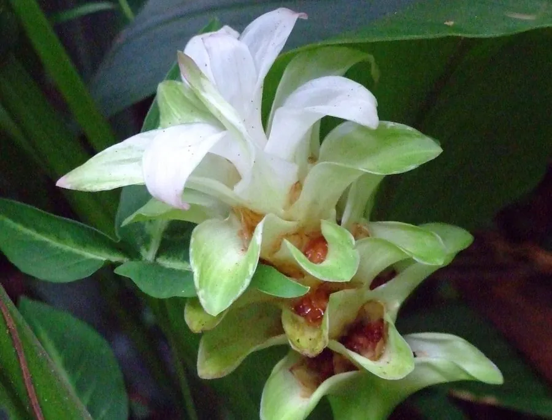

农作物与经济植物 · 植物界
姜黄 Curcuma longa

姜科多年生草本，根状茎金黄、含姜黄素，是咖喱粉的黄色来源与重要药用作物，原产南亚热带地区。
- 分类
- 门被子植物门纲木兰纲目姜目科姜科属姜黄属
- 栖息环境
- 热带雨林边缘、河谷冲积土与荫蔽农田，喜高温多湿
- 地理分布
- 原产印度与东南亚，印度为主产国，中国南方、斯里兰卡等地栽培
- 保护级别
- 暂无评估；栽培作物
物种志
姜黄为姜科姜黄属多年生草本，株高 1–1.5 米，地下具肥厚多肉的根状茎，断面橙黄至金黄色。叶基生，长椭圆形，长 30–50 厘米，叶脉明显。穗状花序自叶鞘中抽出，花淡黄或粉白，苞片淡绿，花期 8–10 月。
姜黄原产印度与东南亚热带地区，印度栽培历史逾四千年。根状茎含姜黄素与挥发油，磨粉后是咖喱粉的黄色基底，也用于腌渍、饮料与化妆品着色；中医认为其能破血行气、通经止痛。近年姜黄素因抗氧化、抗炎研究而备受关注，但口服吸收率低，补充剂需谨慎。栽培喜高温多湿、半阴环境，以根状茎繁殖，生长期约 8–10 个月，冬季地上部枯萎后掘取根状茎。
形态与习性
- 原产地印度与东南亚热带地区
- 株高1–1.5 米，叶长 30–50 厘米
- 色素根状茎含姜黄素，呈橙黄色
- 用途咖喱与腌渍着色、药用、天然染料
- 栽培喜高温多湿半阴，根状茎繁殖
- 采收生长期 8–10 个月，地上部枯萎后掘取
趣味知识
- 咖喱标志性的黄色就来自姜黄，而不是辣椒或藏红花。
- 姜黄素脂溶性、口服吸收差，印度传统吃法常与黑胡椒、油脂同用。
- 它也是天然染料，佛教僧袍的明黄色传统上就用姜黄染色。
- 姜黄与生姜是近亲，但姜黄根状茎断面呈橙黄色、香气更土质。